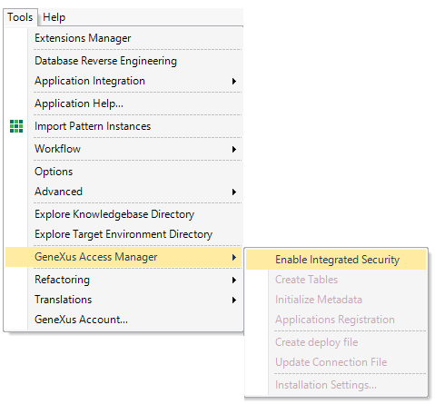

The security module of any GeneXus application (web applications and mobile applications) is provided by GeneXus Access Manager. Security controls are done automatically by enabling integrated security in your application.
To start using GeneXus Access Manager in your Knowledge Base you just need to configure Enable Integrated Security property = True in your KB at version level and Rebuild All.
A shortcut for enabling integrated security is offered in the main GeneXus menu: Tools > GeneXus Access Manager > Enable Integrated Security.

See Creating the GAM repository for the first time from GeneXus
After setting Enable Integrated Security property = True and doing Rebuild all, the following happens in the application (web and mobile application):
GAM Examples are consolidated in the KB is the user decides to do so, during GAM Activation Process.
| Backlinks | |
| GAM - Users | Toc:GeneXus Access Manager (GAM) |